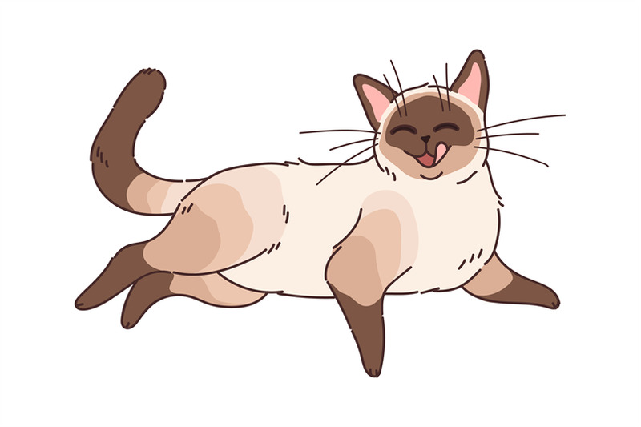

Currently, I have a cat! She is very cute, and I've had her for a while. She enjoys eating snacks, sleeping, and destroying shopping bags. Even though she causes chaos, I still love her.
My cat does not actually look like this (or does she).
I used to have fish when I was younger (many times actually). I got to pick a new piece of decoration whenever we went to the pet store. They unfortunately passed away, but at least they lived a happy life. I used to think it was a great responsibility to be able to feed the fish!